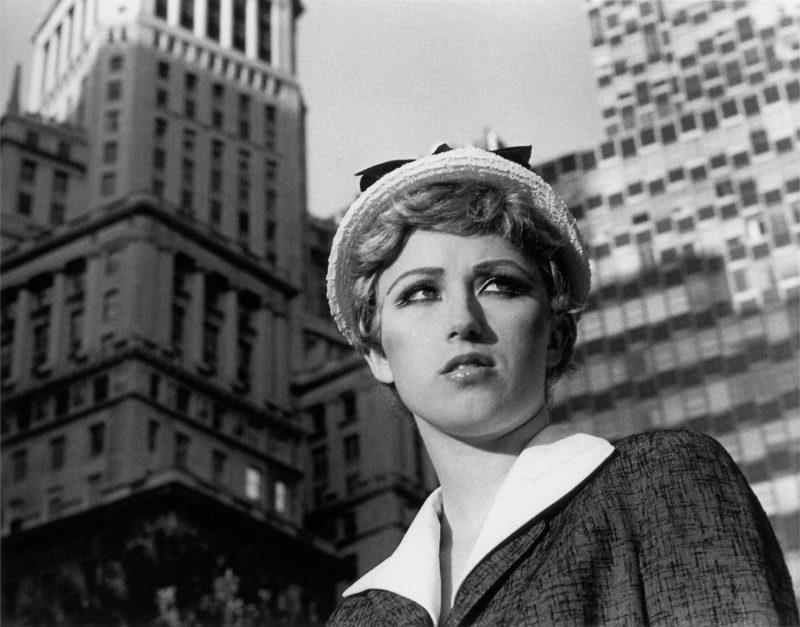
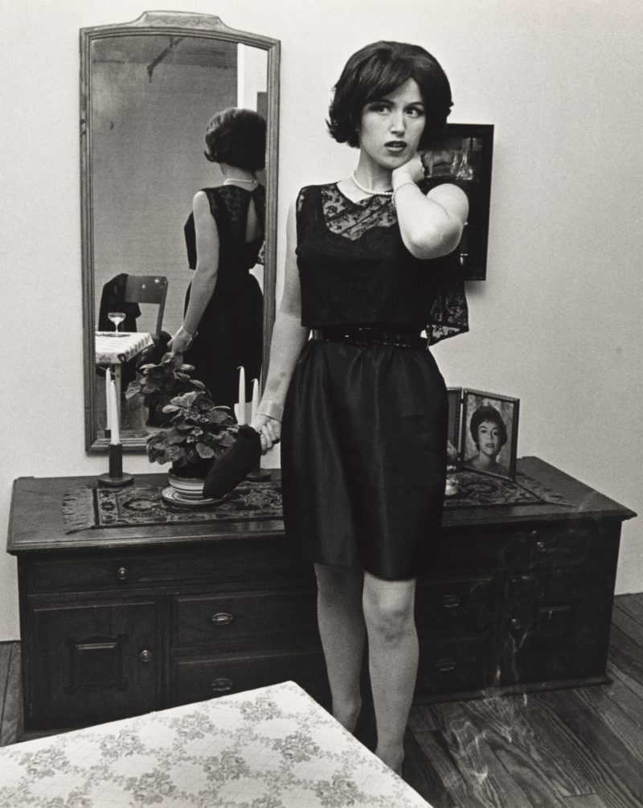

cindy sherman
~/anna/research/cindy-shermanCindy Sherman's Untitled Film Stills: Estrangement, Performance, and the Theatrical Construction of Femininity
This paper asks how Sherman's Untitled Film Stills (1977–1980) can be understood through the intersection of art history and theatre/performance studies ; particularly through Bertolt Brecht's theory of the Verfremdungseffekt, or estrangement effect ; to interrupt cinematic spectatorship and expose femininity as a culturally rehearsed visual performance. Rather than simply reproducing or critiquing stereotypes, Sherman constructs fictional cinematic scenes that feel culturally familiar, drawing on collectively shared visual conventions from Hollywood cinema and mass media — while simultaneously disrupting that familiarity through emotional detachment, exaggerated pose, narrative suspension, and theatrical stylization.
Sherman's photographs therefore operate less as cinematic narratives than as interrupted theatrical scenes that reveal how femininity is staged and culturally learned through visual media.


Read the full paper — including the historical context, literature review, and complete theoretical argument.
read the full paper (PDF)